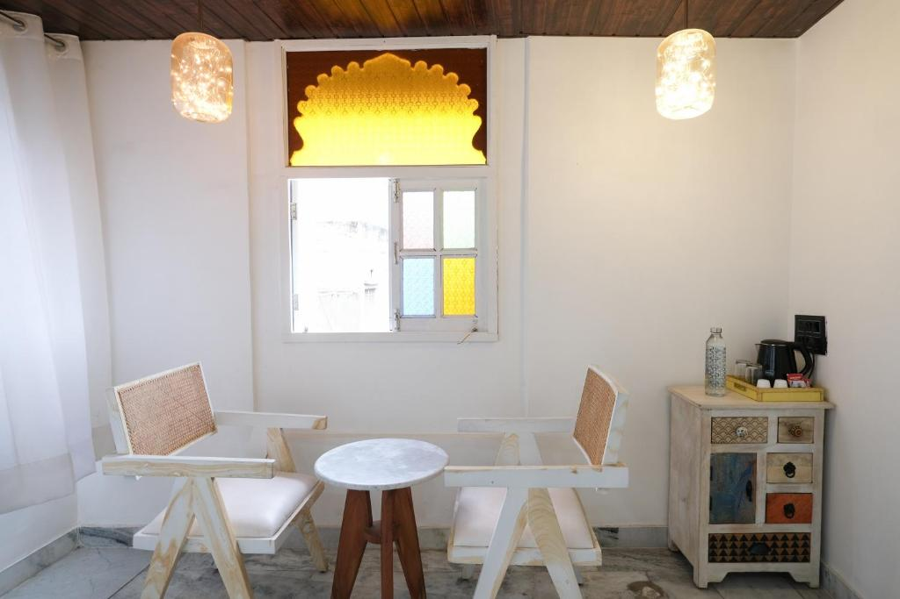

3 Raahi
- Room
- 3 beds in a 6-bed dorm with its own bathroom
- Where
- Jagdish Chowk, 30 m from Jagdish Temple; City Palace and Gangaur Ghat a 2-minute walk
- Rating
- 8.7 on Booking.com (215 reviews)
- Cost
- ₹6,197 total · ₹2,066 each
- Cancel
- Free before 14 Dec; nothing to pay until 12 Dec
- Ask them
- Early bag drop on 16 Dec (we arrive about 08:30)
Open on Booking.com · pick "Bed in 6-Bed Dormitory Room" × 3 · Photos ↗